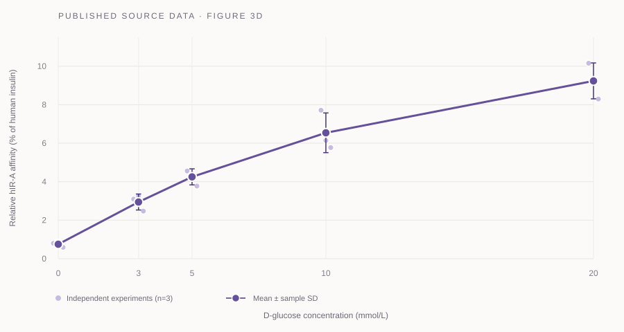

A graded increase across glucose concentrations
Values from the Nature 2024 source workbook · Figure 3d
3.16×mean paired change
3 → 20 mmol/L
3 → 20 mmol/L

| Glucose (mmol/L) | NNC2215 mean ± SD | Insulin degludec control mean |
|---|---|---|
| Loading source-data summary… | ||
ASSAY hIR-A · 1.5% HSA · REPLICATES 3 independent experiments